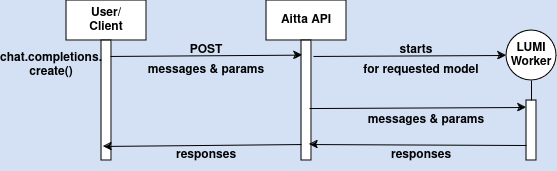

Chat completions with LumiOpen/Llama-Poro-2-70B-Instruct#
Now we are ready to test chat-tuned LumiOpen/Llama-Poro-2-70B-Instruct.
Create API key and use aitta-client#
We are going to use API provided by Aitta inference platform. We need a Python client aitta-client to be able to use it. It has been already installed to this workspace. To see it’s documentation, visit PyPi.
We also need the API key. You can create it after logging into Aitta.
Introduction for API key creation
1. Log in to the web frontend
2. Navigate to the model page of the model for which to generate the token
3. Open the tab titled 'API Key'
4. Generate and copy the token
After this we call your API key an “access token”. We use it to configure Aitta client. Then it is possible to load model for usage.
You can save you API key for a safe place to be used in the future since it is valid over 80 days. Note that API keys are model specific at the moment.
Let’s start with basics, generate API key for this specific model and configure Aitta client to load the model LumiOpen/Llama-Poro-2-70B-Instruct. Since aitta-client is OpenAI compatible we can configure OpenAI client to use the OpenAI compatibility endpoints. We need to adjust the parameters api_key and base_url when configuring the OpenAI client.
# Set your personal model-specific API key here
api_key = "<API-KEY-here>"
model_name = "LumiOpen/Llama-Poro-2-70B-Instruct"
from aitta_client import Model, Client, StaticAccessTokenSource
import openai
# configure Client instance with API URL and access token
token_source = StaticAccessTokenSource(api_key)
aitta_client = Client("https://api-staging-aitta.2.rahtiapp.fi", token_source)
# load the LumiOpen/Poro-34B-chat model
model = Model.load(model_name, aitta_client)
print(model.description)
# configure OpenAI client to use the Aitta OpenAI compatibility endpoints
client = openai.OpenAI(api_key=token_source.get_access_token(), base_url=model.openai_api_url)
Create chat completions#
You must be eager to get started with actually getting responses from model based on your prompt.
Let’s create one using client.chat.completions.create() method and then explore how to fine-tune its parameters.
Here again diagram of the first API call using client for chat completions:

# perform chat completion with the OpenAI client
chat_completion = client.chat.completions.create(
messages=[
{
"role": "user",
"content": "Define with one sentence what are the Poro models created by LumiOpen community."
}
],
model=model.id,
stream=False # response streaming is currently not supported by Aitta, now you get the full response in one go
)
print(chat_completion.choices[0].message.content)
Understanding required parameters for client.chat.completions.create method#
We just used client.chat.completions.create method to generate chat-based completions. This method requires two key parameters: messages and model.
The model refers to the specific AI model that you’ve loaded with the Aitta client. The messages parameter is a list of message objects that represents the conversation history up to the point of the request. Each message object includes a role and content. The role determines how the model interprets the message, and it can be one of three types: user, system, or assistant.
The content field is the actual text of the message. Understanding the role helps the model generate more accurate and contextually appropriate responses based on the conversation flow.
Role |
Description |
Usage example |
|---|---|---|
user |
Represents the input from the user, such as a question or prompt. This helps initiate the conversation or provide queries. |
|
system |
Provides guidelines or instructions for how the model should behave throughout the conversation. This is useful for setting the tone or framing the conversation. |
|
assistant |
Represents the AI’s response to the user, guiding the conversation forward. This role helps the model generate replies based on the user’s input. |
|
# Example messages to prompt the model
messages = [
{"role": "system", "content": "You are a helpful assistant."},
{"role": "user", "content": "Can you explain what AI is?"},
{"role": "assistant", "content": "AI stands for Artificial Intelligence. It refers to machines that can perform tasks that typically require human intelligence."},
{"role": "user", "content": "How does AI work?"}
]
# Perform a chat completion request
chat_completion = client.chat.completions.create(
messages=messages,
model=model.id,
stream=False
)
# Output the response
print(chat_completion.choices[0].message.content)
# Uncomment below line to see documentation for this method
#help(client.chat.completions.create)
Understanding optional parameters for client.chat.completions.create method#
There are several parameters you can adjust to fine-tune the generated responses. These parameters help control the randomness, length, and number of responses generated. Below are the parameters supported for OpenAI compatibility at the moment.
Parameter |
Description |
Effect |
|---|---|---|
top_p (nucleus sampling) |
A value between 0 and 1. |
Lower values (like 0.5) make the model more focused and predictable. Higher values (like 0.9) make the model more creative and varied. |
temperature (randomness control) |
A value between 0 and 2. |
A higher temperature increases creativity, while a lower temperature makes responses more predictable. |
max_completion_tokens (maximum tokens) |
Limits the number of tokens (words or parts of words) the model can generate in a response. |
A smaller value shortens the response, while a larger value allows for more detailed answers. |
n (number of completions) |
A higher value (e.g., 3) generates multiple variations of responses, offering different perspectives or creative options. |
You can explore how these affect responses generated by the model.
Note: Because the Llama-Poro-2-70B-Instruct model’s maximum sequence length is 8192 tokens, setting the max_tokens parameter too low can cause responses to be cut off when the combined token count of input and output exceeds this limit.
Tip: Use temperature and top_p together cautiously. Typically, adjusting one is enough—setting both too high may lead to overly random responses, while both too low may make responses overly constrained.
Try it yourself#
Now it’s time for you to experiment with these parameters.
You may have noticed that sometimes responses are cut off mid-sentence. You can influence this by adjusting max_completion_tokens. However, even with a higher value, truncation might still occur.
### CODE HERE ###